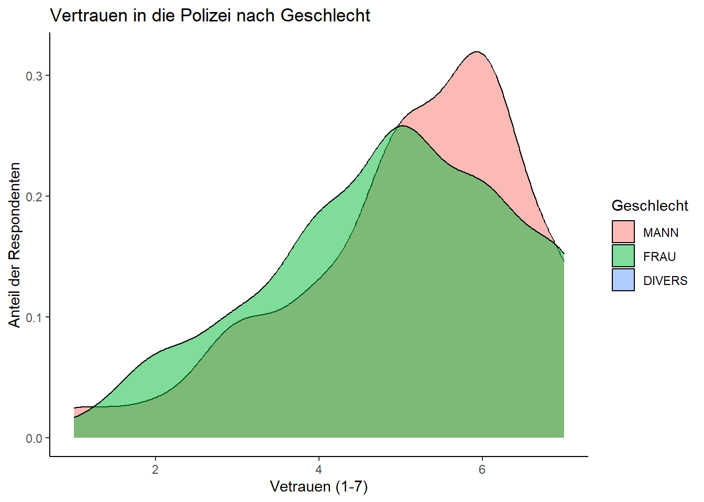
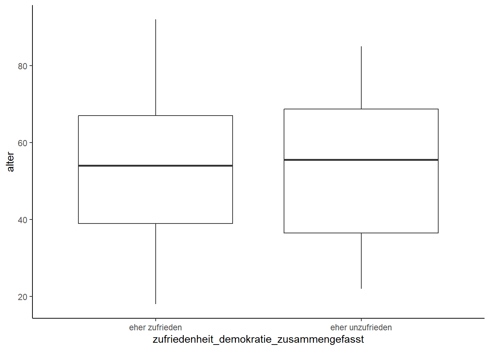
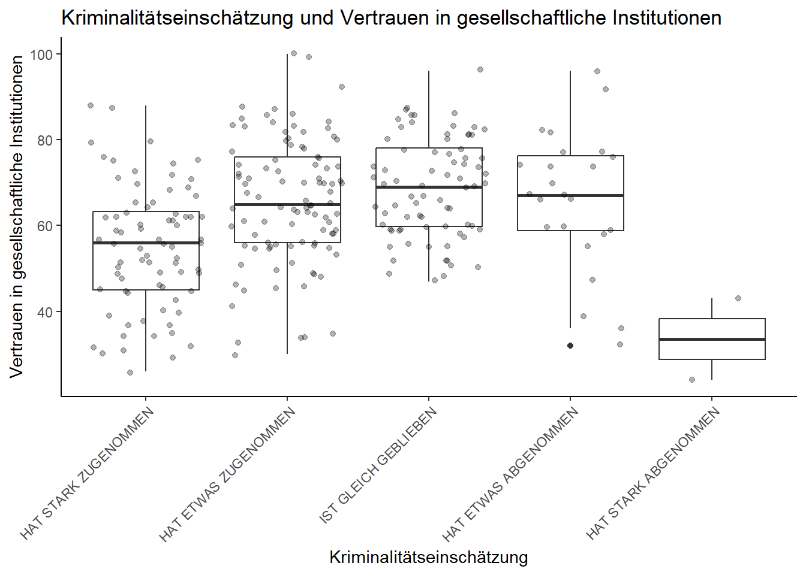
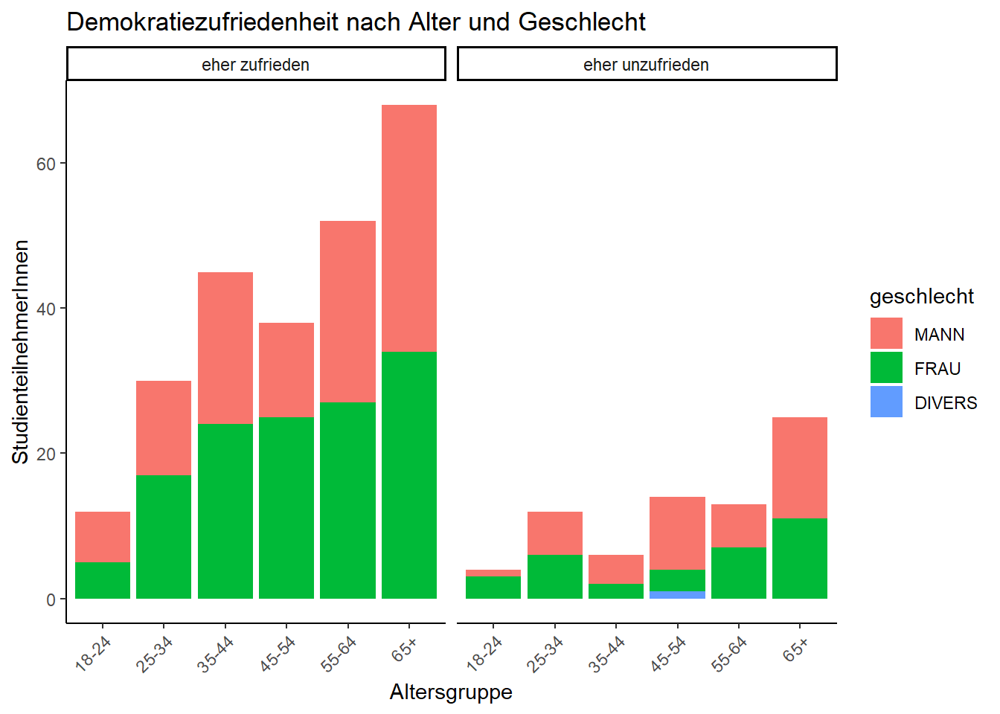

Tabellen und Grafiken in R
Dieses Notebook illustriert verschiedene Möglichkeiten dafür, wie auf Grundlage der ALLBUS-Daten informative Tabellen und Plots erstellt werden können. Tabellen und Datenvisualisierungen (“Plots”) stellen zwei sehr effektive Möglichkeiten dar, sich schnell einen Überblick über komplexe Daten zu verschaffen. Dabei lassen sich oftmals Zusammenhänge zwischen zwei oder mehr Variablen erahnen, die dann später inferenzstatistisch auf die Solidität ihres Zusammenhangs hin überprpüft werden können.
1 Data Management
Zunächst laden wir die Pakete des tidyverse. Das Paket ggplot2 ist das zentrale Werkzeug, um informative Plots zu produzieren. Die Einstellung theme_set hat einen Einfluss auf die Grafiken, die wir später erstellen werden.
Jetzt laden wir den ALLBUS-Datensatz mittels der Stata-Importfunktion read_dta.
Nun laden wir zudem noch drei zuvor erstellte Zufallssamples aus dem Gesamtdatensatz. Diese bestehen aus einer kleineren Anzahl relevanter Variablen und sind daher etwas übersichtlicher als der Hauptdatensatz.
Wie sehen die Daten aus?
# A tibble: 20 × 4
alter geschlecht bildung fernsehkonsum
<dbl> <fct> <fct> <dbl>
1 37 MANN FACHHOCHSCHULREIFE 3
2 38 MANN MITTLERE REIFE 7
3 47 FRAU VOLKS-,HAUPTSCHULE 6
4 66 MANN HOCHSCHULREIFE 2
5 47 FRAU HOCHSCHULREIFE 7
6 75 MANN VOLKS-,HAUPTSCHULE 7
7 41 FRAU MITTLERE REIFE 4
8 18 MANN NOCH SCHUELER 7
9 91 MANN <NA> NA
10 56 MANN HOCHSCHULREIFE 4
11 58 MANN HOCHSCHULREIFE 7
12 32 MANN MITTLERE REIFE 2
13 47 MANN FACHHOCHSCHULREIFE 1
14 49 MANN MITTLERE REIFE 1
15 23 MANN MITTLERE REIFE 0
16 48 FRAU MITTLERE REIFE 0
17 49 MANN HOCHSCHULREIFE 0
18 36 MANN FACHHOCHSCHULREIFE 7
19 70 MANN HOCHSCHULREIFE 7
20 43 FRAU MITTLERE REIFE 72 Tabellen
Tabellen (und besonders sog. Kontingenz- oder Häufigkeitstabellen) sind ein einfaches und praktisches Mittel, um sich einen Überblick über Daten zu verschaffen. Um solche Tabellen zu erstellen, formen wir in der Regel Data Frames mit den Funktionen des tidyverse (und vor allem mit dem Paket dplyr) so um, dass sie die gewünschten Informationen enthalten. Wir aggregieren.
2.1 Einfache Häufigkeitstabelle
Wir berechnen eine einfache Häufigkeitstabelle für die Variable geschlecht. Dies geschieht mit den Funktionen group_by und summarise. Die Funktion n übernimmt das eigentliche Auszählen der Häufigkeit einer Variablenausprägung.
geschlechterverteilung <- sample_klein %>%
group_by(geschlecht) %>%
summarise(anzahl = n())
geschlechterverteilung# A tibble: 2 × 2
geschlecht anzahl
<fct> <int>
1 MANN 15
2 FRAU 5Im nächsten Schritt fügen wir den absoluten Zahlen relative Anteile hinzu, um das Geschlechterverhältnis besser zu verstehen.
geschlechterverteilung <- sample_klein %>%
group_by(geschlecht) %>%
summarise(anzahl = n()) %>%
mutate(anteil = anzahl/sum(anzahl))
geschlechterverteilung# A tibble: 2 × 3
geschlecht anzahl anteil
<fct> <int> <dbl>
1 MANN 15 0.75
2 FRAU 5 0.25Nun fügen wir den Anteilen von 1 noch Prozentanteile hinzu, indem with mit 100 multiplizieren und runden (was in erster Linie kosmetischer Natur ist).
2.2 Tabellen speichern
Jetzt schreiben wir die Daten in eine CSV-Datei, die wir bspw. später mit Excel oder einer anderen Tabellenkalkulation öffnen können.
2.3 Kreuztabellen
Was, wenn wir zwei Variablen mit Blick auf ihre Werte in Beziehung setzen wollen? Das bezeichnet man als Kreuz- oder Kontigenztabelle. Man erzeugt eine Kreuztabelle mit dplyr, indem man nach mehreren Variablen gruppiert.
bildung_und_geschlecht <- sample_klein %>%
group_by(bildung, geschlecht) %>%
summarise(anzahl = n()) %>%
mutate(anteil = anzahl/sum(anzahl),
prozent = round(anteil * 100))
bildung_und_geschlecht# A tibble: 9 × 5
# Groups: bildung [6]
bildung geschlecht anzahl anteil prozent
<fct> <fct> <int> <dbl> <dbl>
1 VOLKS-,HAUPTSCHULE MANN 1 0.5 50
2 VOLKS-,HAUPTSCHULE FRAU 1 0.5 50
3 MITTLERE REIFE MANN 4 0.571 57
4 MITTLERE REIFE FRAU 3 0.429 43
5 FACHHOCHSCHULREIFE MANN 3 1 100
6 HOCHSCHULREIFE MANN 5 0.833 83
7 HOCHSCHULREIFE FRAU 1 0.167 17
8 NOCH SCHUELER MANN 1 1 100
9 <NA> MANN 1 1 100Möglicherweise möchte ich den Anteil anders berechnen und nicht die relative Geschlechterverteilung innerhalb eines Bildungsabschlusses in den Blick nehmen, sondern etwa die Verteilung der Bildungsabschlüsse jeweils für männliche und weibliche Studienteilnehmer anschauen. Dies lässt sich mit einer Neugruppierung der Daten durch group_by() erreichen.
geschlecht_und_bildung <- sample_klein %>%
group_by(geschlecht, bildung) %>%
summarise(anzahl = n()) %>%
mutate(anteil = anzahl/sum(anzahl),
prozent = round(anteil * 100))
geschlecht_und_bildung# A tibble: 9 × 5
# Groups: geschlecht [2]
geschlecht bildung anzahl anteil prozent
<fct> <fct> <int> <dbl> <dbl>
1 MANN VOLKS-,HAUPTSCHULE 1 0.0667 7
2 MANN MITTLERE REIFE 4 0.267 27
3 MANN FACHHOCHSCHULREIFE 3 0.2 20
4 MANN HOCHSCHULREIFE 5 0.333 33
5 MANN NOCH SCHUELER 1 0.0667 7
6 MANN <NA> 1 0.0667 7
7 FRAU VOLKS-,HAUPTSCHULE 1 0.2 20
8 FRAU MITTLERE REIFE 3 0.6 60
9 FRAU HOCHSCHULREIFE 1 0.2 20Lag also im ersten Anlauf das Geschlecht der Gruppierung zugrunde, ist es in der zweiten Version der Bildungsabschluss.
3 Visualisierung
Beim Erstellen von Grafiken (Plots) mit R kommt eines der populärsten tidyverse-Pakete zum Einsatz: ggplot2. Damit lassen sich sehr vielfältige Grafiken erstellen.
3.1 Balkendiagramme
Das vermutlich einfachste Diagramm, das man mit dem ggplot2-Paket erstellen kann, ist ein Balken- oder Säulendiagramm (barplot). Es zeigt die Häufigkeitsverteilung einer diskreten Variablen, indem es Säulen auf der x-Achse darstellt. Balkendiagramme sind besonders geeignet, um wenige Ausprägungen (bis ca. 15) zu veranschaulichen. Wenn es mehr Kategorien gibt, wird die Anschaulichkeit beeinträchtigt, und es empfiehlt sich, auf Liniendiagramme auszuweichen.
Das nachstehende Beispiel zeigt die Häufigkeitsverteilung der Variable geschlecht im Datensatz (bzw. dem kleinen Sample).

In einem nächsten Schritt fügen wir eine Überschrift hinzu und formatieren die Balken und Achsen so, dass das Plot lesbarer ist.
ggplot(sample_klein, aes(bildung)) +
geom_bar() +
ggtitle("Verteilung der Bildungsabschlüsse der Befragten") +
theme(axis.text.x = element_text(angle = 45, vjust = 1, hjust = 1)) +
xlab("") + ylab("")
Farben lassen sich in ggplot vielseitig einsetzen, um Kategorienunterschiede anzuzeigen. Dies geschieht mit den Argumenten ‘fill’ bzw. ‘color’.
ggplot(sample_klein, aes(bildung, fill = bildung)) +
geom_bar() +
ggtitle("Verteilung der Bildungsabschlüsse der Befragten") +
theme(axis.text.x = element_text(angle = 45, vjust = 1, hjust = 1)) +
xlab("") + ylab("")
Es existieren zahlreiche Farbpaletten für ggplot, um unterschiedliche Arten von Beziehungen darzustellen. Das nachstehende Palette unterscheidet verschiedenen Kategorien. Für gradierte Variablen (‘viel’ - ‘wenig’) sind andere Paletten z.T. besser geeignet. Eine gute Auswahl an Palette enthält u.a. das Paket RColorBrewer.
ggplot(sample_klein, aes(bildung, fill = bildung)) +
geom_bar() + coord_flip() +
scale_fill_brewer(palette = "Set1") +
ggtitle("Verteilung der Bildungsabschlüsse der Befragten") +
xlab("") + ylab("")
Schließlich lassen sich auch die Beschriftung und weitere Aspekte eines Plots anpassen (Achsenorientierung, Legende etc).

3.2 Histogramme
Für ein besseres Verständnis einer Verteilung sind oftmals die Häufigkeitsausprägungen einer kontinuierlichen Variable in gleich großen Gruppen interessant (sog. “bins”). Dabei hilft der Visualisierungstyp Histogramm. Ein Histogramm ist eine grafische Darstellung der Häufigkeitsverteilung kardinal skalierter Merkmale. Dabei werden Daten in Klassen unterteilt, die unterschiedliche Breiten haben können. Rechtecke mit der Breite der Klassen werden nebeneinander gezeichnet, wobei ihre Flächen die (relativen oder absoluten) Klassenhäufigkeiten repräsentieren. Die Höhe jedes Rechtecks zeigt die (relative oder absolute) Häufigkeitsdichte an, also die Häufigkeit geteilt durch die Breite der jeweiligen Klasse.

Auch hier lassen sich relevante Aspekte anpassen, etwa die Anzahl und Breite der Flächen.
ggplot(sample_mittel, aes(alter)) +
geom_histogram(bins = 40) +
ggtitle("Altersverteilung der Respondenten") +
xlab("Alter") + ylab("Anzahl der RespondentInnen")
Hier können wir erstmalig die Farbe eines Elements gezielt einsetzen, um eine zusätzliche (also nach Vetrauen auf der x-Achse und der Anzahl der Respondenten auf der y-Achse eine dritte Variable) darzustellen, nämlich das Geschlecht der RespondentInnen.
ggplot(sample_gross, aes(vertrauen_polizei, fill = geschlecht)) +
geom_histogram(binwidth = 1, position = "dodge") +
ggtitle("Vertrauen in die Polizei nach Geschlecht") +
xlab("Vetrauen (1-7)") + ylab("Anzahl der RespondentInnen") + labs(fill = "Geschlecht") 
Neben Blaken und Flächen beherrscht ggplot auch zahlreiche weitere Darstellungsformen (sog. geoms). Eine interessante Alternative zum klassischen Histogramm ist etwa das Dichte-Plot (density plot). Nachstehend verwenden wir zwei Flächen und einen Trasparenz-Effekt für die Darstellung.
3.3 Dichte-Plots
polizei <- sample_gross %>% select(vertrauen_polizei, geschlecht) %>% filter(!is.na(geschlecht))
ggplot(polizei, aes(vertrauen_polizei, fill = geschlecht)) +
geom_density(alpha = 0.5) +
ggtitle("Vertrauen in die Polizei nach Geschlecht") +
xlab("Vetrauen (1-7)") + ylab("Anteil der Respondenten") + labs(fill = "Geschlecht") 
3.4 Liniendiagramme
Zu den klassischen Plot-Typen gehören neben Barplots und Histogrammen auch Linien-, Punkt- und Streudiagramme, sowie Boxplots.
Liniendiagramme zeigen den Zusammenhang von zwei Variablen, in diesem Beispiel einer nominalen und einer ordinalen (oder, wenn wir großzügig sind [pseudo]metrischen) Variable, nämlich Wahlabsicht nach Partei und Vertrauen in die Presse.
vertrauen_nach_partei <- sample_gross %>%
rename(Partei = wahlabsicht_partei) %>%
group_by(Partei) %>%
summarise(Vertrauenswürdigkeit = mean(vertrauen_zeitungswesen, na.rm = T))
ggplot(vertrauen_nach_partei, aes(Partei, Vertrauenswürdigkeit, group = 1)) +
geom_line() + geom_point(size = 3) +
theme(axis.text.x = element_text(angle = 45, vjust = 1, hjust = 1)) +
ggtitle("Vertrauen in die Presse nach Partei")
Es lassen sich auch problemlos mehrere Geoms kominieren (hier: Linie und Punkte). Im folgenden Beispiel lässt sich durch eine absteigende Sortierung der Ergebnisse ein klareres Resultat erzielen.
vertrauen_nach_partei_sortiert <- vertrauen_nach_partei %>%
arrange(desc(Vertrauenswürdigkeit)) %>%
mutate(Rang = row_number())
ggplot(vertrauen_nach_partei_sortiert, aes(reorder(Partei, Rang), Vertrauenswürdigkeit, group = 1)) +
geom_line() + geom_point(size = 3) +
theme(axis.text.x = element_text(angle = 90, vjust = 1, hjust = 1)) +
ggtitle("Verrauen in die Presse nach Partei") + xlab("")
3.5 Streudiagramme
Ein weiterer Diagrammtyp, der häufig zum Einsatz kommt, ist das sog. Streudiagramm (scatter plot). Ein Streudiagramm, auch als Punktwolkebekannt, ist eine visuelle Darstellung von beobachteten Wertepaaren zweier statistischer Merkmale. Diese Wertepaare werden in ein kartesisches Koordinatensystem eingetragen, was eine Ansammlung von Punkten ergibt. Die Darstellung der Punkte kann mit verschiedenen Symbolen erfolgen.
Mit diesem Plottypen lassen sich die Beziehung mehrerer Variablen (i.d.R. zwei, jeweils auf der x/y-Achse) anschaulich darstellen und sowohl (lineare oder nicht-lineare) Zusammenhänge indetifizieren als auch Cluster bilder.
Wir erzeugen zunächst einen Data Frame, der Informationen zu Geschlecht, Alter, Einkommen und Bildung der StudienteilnehmerInnen enthält.
einkommen <- daten %>%
select(age, sex, educ, di01a) %>%
rename(alter = age,
geschlecht = sex,
bildung = educ,
einkommen = di01a) %>%
replace_with_na_all(condition = ~.x < 0) %>%
mutate(geschlecht = as_factor(geschlecht),
bildung = as_factor(bildung)) %>%
drop_na() %>%
slice_sample(n = 80)
einkommen# A tibble: 80 × 4
alter geschlecht bildung einkommen
<dbl+lbl> <fct> <fct> <dbl+lbl>
1 44 MANN VOLKS-,HAUPTSCHULE 1814
2 44 MANN FACHHOCHSCHULREIFE 3600
3 36 MANN FACHHOCHSCHULREIFE 3600
4 49 MANN FACHHOCHSCHULREIFE 1450
5 53 MANN MITTLERE REIFE 2500
6 50 FRAU HOCHSCHULREIFE 1550
7 57 FRAU FACHHOCHSCHULREIFE 2900
8 38 MANN HOCHSCHULREIFE 5000
9 59 MANN MITTLERE REIFE 4000
10 43 MANN HOCHSCHULREIFE 2900
# ℹ 70 more rowsWelche Beziehung lässt sich zwischen Alter (x-Achse) und dem Einkommen (y-Achse) der RespondentInnen feststellen?

Wir entwickeln dieses Beispiel nun noch etwas weiter.
ggplot(einkommen, aes(alter, einkommen)) +
geom_jitter(width = 1) +
geom_smooth(method = 'lm', formula = 'y ~ x') +
ggtitle("Zusammenhang zwischen Alter und Nettoeinkommen") +
xlab("Alter") + ylab("Nettoeinkommen in Euro")
Bei der Linie, die wir mit dem Befehl geom_smooth gezeichnet haben, handelt es sich um eine Regressionsgerade. Der graue Bereich um die Gerade zeigt den lokalen Standardfehler an. Auf Regressionmodelle gehen wir zum Abschluss des Moduls noch intensiv ein. Schon jetzt kann man aber erahnen, was uns die Regressionsgerade illustriert.
Was, wenn wir mehr als drei Variablen (bzw. unterschiedliche Ausprägungen einer kategorialen Variable) darstellen wollen? Neben der Positionierung auf der x- und y-Achse und der Farbe können wir hier zusätzlich auch noch mit unterschiedlichen Formen arbeiten.
Das nachstehende Beispiel ist nicht unbedingt besonders informativ, zeigt aber das Prinzip nachvollziehbar auf.

3.6 Boxplots
Ein Box-Plot, auch als Box-Whisker-Plot oder Kastengrafik bezeichnet, ist ein grafisches Darstellungsinstrument, das verwendet wird, um die Verteilung von mindestens ordinalskalierten Merkmalen übersichtlich darzustellen. Es fasst robuste Streuungs- und Lagemaße in einer einzigen Grafik zusammen. Diese Darstellung bietet auf einen Blick Informationen darüber, wo die Datenwerte liegen und wie sie über diesen Bereich verteilt sind. Dies wird erreicht, indem die sogenannte Fünf-Punkte-Zusammenfassung, bestehend aus dem Median, den beiden Quartilen und den beiden Extremwerten, in einer grafischen Form präsentiert wird.
Zunächst legen wir noch einen weiteren Data Frame an, der Infortationen zur Demokratiezufriedenheit der RespondentInnen enthält.
demokratiezefriedenheit <- sample_gross %>%
mutate(altersgruppe = cut(alter,
breaks = c(0, 24, 34, 44, 54, 64, Inf),
labels = c("18-24", "25-34", "35-44", "45-54", "55-64", "65+")),
zufriedenheit_demokratie_zusammengefasst = as_factor(case_when(
zufriedenheit_demokratie %in% c("SEHR ZUFRIEDEN",
"ZIEMLICH ZUFRIEDEN",
"ETWAS ZUFRIEDEN") ~ "eher zufrieden",
zufriedenheit_demokratie %in% c("ETWAS UNZUFRIEDEN",
"ZIEML. UNZUFRIEDEN",
"SEHR UNZUFRIEDEN") ~ "eher unzufrieden"))) %>%
select(alter, altersgruppe, geschlecht, zufriedenheit_demokratie_zusammengefasst) %>%
drop_na()Dann erstellen wir ein einfaches Boxplot, welches das Alter der eher zufriedenen Personen mit dem der eher unzufriedenen vergleicht.
ggplot(demokratiezefriedenheit, aes(zufriedenheit_demokratie_zusammengefasst, alter)) +
geom_boxplot()
Der Einsatz von Boxplots für den Gruppenverleich bietet sich oftmals an, wenn man verschiedene Lageparameter vergleichen möchte.
Nun erstellen wir einen anderen Data Frame, jetzt zum Vertrauen in gesellschaftliche Institutionen, um ein weiteres Beispiel für die Verwendung von Boxplots in den Blick zu nehmen.
ggplot(vertrauen_summiert, aes(entwicklung_kriminalitaet, vertrauen_gesamt)) +
geom_boxplot() + geom_jitter(alpha = 0.3) +
theme(axis.text.x = element_text(angle = 45, vjust = 1, hjust = 1)) +
ggtitle("Kriminalitätseinschätzung und Vertrauen in gesellschaftliche Institutionen") +
xlab("Kriminalitätseinschätzung") + ylab("Vertrauen in gesellschaftliche Institutionen")
Wir speichern unser Plot zudem als PDF.
3.7 Facettierte Plots
Im letzten Abschnitt behandeln wir eine weitere nützliche Funktion von ggplot, um eine größere Zahl von Variablen zu visualisieren – die sog. Facettierung.
Dazu zählen wir zunächst wie zu Beginn des Kapitels mehrere Variablen aus, hier die Altersgruppe, das Geschlecht und die zuvor ermittelte Demokratiezufriedenheit als binäre Variable (eher zufrieden/eher unzufrieden).
Das nun folgenden Plot hat die Altersgruppe auf der X-Achse, die Anzahl der RespondentInnen auf der Y-Achse und das Geschlecht als Füllfarbe. Zu diesen drei Variablen kommt noch eine weitere dazu (Demokratiezufriedenheit) nach der facettiert wird.
ggplot(demokratiezefriedenheit_gruppen, aes(altersgruppe, n, fill = geschlecht)) +
geom_bar(stat = "identity") +
facet_grid(cols = vars(zufriedenheit_demokratie_zusammengefasst)) +
theme(axis.text.x = element_text(angle = 45, vjust = 1, hjust = 1)) +
ggtitle("Demokratiezufriedenheit nach Alter und Geschlecht") +
xlab("Altersgruppe") + ylab("StudienteilnehmerInnen")
4 Zusammenfassung
Wie wir sehen, lassen sich Daten mithilfe von Tabellen und Plots sinnvoll beschreiben und so erste Rückschlüsse zu Mustern und Zusammenhängen ziehen, die dann später systematisch mithilfe inferenzstatistischer Verfahren überprüft werden können.